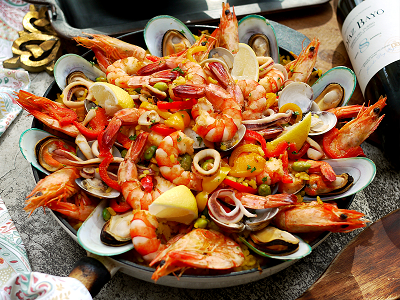

西班牙Spain
食物名稱：西班牙 Tapas
食物介紹：
Tapas原意是小盤子，
現指飯前開胃的小菜或是二頓正餐之間的點心。
在西班牙的飲食文化中佔有很重要的位置，
幾乎大餐廳和小館子都可以找到Tapas的身影。
Tapas都是鹹的，
分為冷食和熱食，肉類、海鮮和蔬菜等，
其特色在於分量少種類多，一次可嚐到多種味道。

食物名稱：西班牙海鮮飯 (Paella)
食物介紹：
西班牙海鮮飯是西餐三大名菜之一，與法國蝸牛、義大利麵齊名。
源於西班牙魚米之都華倫西亞，直譯是大鍋燉飯。
此飯是當地星期日與法耶火節（Falles）的食品。
裡面加了藏紅花的米飯粒，搭配大量且多樣的新鮮海鮮，蝦子、螃蟹、蛤、牡蠣、魷魚...香氣撲鼻，令人垂涎欲滴。
食物名稱：水果酒 (Sangria)
食物介紹：
最基本的是紅酒、汽水、橙汁、少許白蘭地和一些切粒水果，包括橙、蘋果和檸檬等的混合搭配。
天氣炎熱的時候，只有這樣的凍飲才能讓人喝得過癮。
Sangria 在西班牙隨處可以買到，從街邊小酒吧到五星級酒店，
酸甜微spicy富果香、整體豐富順滑、沁人心脾的風味十分受當地人偏愛。
無論是搭配正餐、tapas、還是飯後小酌，Sangria一定是到西班牙旅遊必點，每日喝都不會厭的美味。